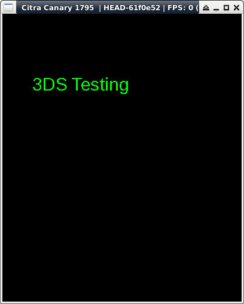

參考資訊：
https://libctru.devkitpro.org/index.html
https://github.com/devkitPro/3ds-examples
main.c
#include <stdio.h>
#include <stdlib.h>
#include <SDL.h>
#include <SDL_ttf.h>
#include "hex_font.h"
int main(void)
{
char buf[255] = { 0 };
SDL_Surface *screen = NULL;
SDL_Init(SDL_INIT_VIDEO);
screen = SDL_SetVideoMode(400, 240, 16, SDL_HWSURFACE);
TTF_Init();
SDL_RWops *rw = SDL_RWFromMem(hex_font, sizeof(hex_font));
TTF_Font *font = TTF_OpenFontRW(rw, 1, 30);
SDL_FillRect(screen, &screen->clip_rect, SDL_MapRGB(screen->format, 0x00, 0x00, 0x00));
SDL_Color col = { 0, 255, 0 };
SDL_Rect rt = { 50, 100, 0, 0 };
SDL_Surface *msg = TTF_RenderUTF8_Solid(font, "3DS Testing", col);
SDL_BlitSurface(msg, NULL, screen, &rt);
SDL_Flip(screen);
SDL_FreeSurface(msg);
SDL_Delay(3000);
TTF_CloseFont(font);
TTF_Quit();
SDL_Quit();
return 0;
}
完成
